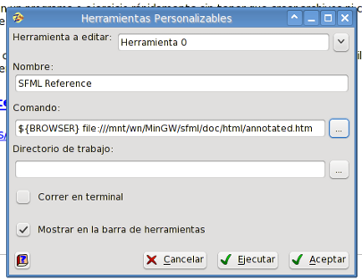

Diálogo Herramientas Personalizables
ZinjaI permite definir hasta diez herramientas personalizadas generales y cinco adicionales por proyecto. Es decir, comandos del menu y/o botones de la barra de herramientas que ejecutan programas o abren documentos definidos por el usuario. Las generales serán visibles en todo momento y se guardarán en la configuración de ZinjaI, mientras que las de proyecto estarán asociadas a un proyecto, se guardarán en el archivo de proyecto del mismo, y solo serán visibles mientras se trabaje sobre ese proyecto. Esta pensado para generar accesos rapidas a herramientas auxiliares del proceso de desarrollo, o documentacion y referencias especificas.

Para agregar o definir una herramienta debe utilizar alguno de los items Configurar del submenu Herramientas Personalizables del menu Herramientas. Esta accion abre el cuadro de dialogo de configuracion de las herramientas. Otra forma mas directa de acceder a este cuadro para modificar una de estas herramientas es haciendo click con el boton derecho sobre la misma en la barra de herramientas. Exactamente el mismo cuadro de diálogo se utiliza para configurar tanto las herramientas generales como las de un proyecto (cuando se abre el cuadro se abre para mostrar solo uno de los dos grupos).
El cuadro presenta en la parte superior una lista desplegable para alternar entre cada una de las diez herramientas (0 a 9). Cuando selecciona alli una herramienta puede ver o modificar los demas campos afectando a la misma. Al aceptar los cambios se modifican todas las herramientas que editadas, no solo la que esta visible en ese momento.
Por cada herramienta puede definir:
- Nombre: es el texto que aparece en el menu con el que se identifica a la herramienta (y en el tooltip en la barra herramientas). Puede ser cualquier cadena de texto.
- Comando: es el comando a ejecutar. Para confeccionar el comando puede utilizar variables como ${MINGW_DIR} para referirse al directorio de instalacion del compilador (solo Windows), ${CURRENT_SOURCE} para referirse a la ruta completa del fuente que zinjai este mostrando al momento de ejecutar el comando, ${BROWSER} para referirse al navegador configurado en ZinjaI, etc. Con el botón que se encuentra a la derecha del cuadro de texto puede acceder a la lista de variables disponibles.
- Acción antes de ejecutar: puede especificar aquí si ZinjaI debe guardar los archivos abiertos (todos o solo el seleccionado) antes de lanzar la ejecución de la herramienta personalizada.
- Ejecución asíncrona: Indica el modo de ejecución de la herramienta. En la ejecución síncrona, la herramienta se lanza a la par de ZinjaI, mientras ZinjaI continúa funcionando normalmente. En la ejecución síncrona ZinjaI no responderá hasta que la herramienta no finalice su ejecución. Este segundo caso es útil por ejemplo cuando la herramienta va a modificar lso fuentes abiertos, para evitar que el usuario los modifique en ZinjaI al mismo tiempo. Esta opción no es tenida en cuenta cuando la configuración de Salidas es "Cuadro de diálogo".
- Salidas: Específica la visibilidad del programa ejecutado y sus salidas. La opción "Ocultas" ejecuta el programa directamente en GNU/Linux (si el programa era un programa de consola, no verá su entrada/salida, a menos que haya invocado ZinjaI desde una consola), e intenta ocultar la ventana del programa en Windows (si el programa es de consola, evita que se muestre dicha consola). La opción "En Terminal" ejecuta normalmente en Windows (un programa de consola mostrará su consola), y en GNU/Linux ejecuta a travéz de un emulador de terminal (el mismo que se define en la pestaña Rutas 2 del cuadro de Preferencias para la ejecución de los programas y proyectos compilados). La opción "En cuadro de diálogo" abrirá un caudro de diálogo ad-hoc donde podrá ver las salidas estándar y de error de su programa. Este cuadro ofrece además un botón para detenerlo, y, a diferencia de la ejecución "En Terminal", no se cierra al finalizar la misma, permitiendo observar tanto el código de salida como los mensajes que el mismo haya generado en las salidas por consola estándar y de error. Nota: no debe utilizar las opciones "Ocultas" o "En cuadro de diálogo" para programas de consola que requieran entradas por teclado, ya que no tendrá forma de ingresar las mismas.
- Acción después de ejecutar: puede especificar aquí si ZinjaI debe recargar los archivos abiertos (todos o solo el seleccionado) al momento de finalizar la ejecución de la herramienta personalizada.
- Mostrar en la barra de herramientas: indica si debe agregarse el icono a la barra de herramientas Herramientas. En caso contrario solo se mostrar en el menu Herramientas. Notar que la barra de herramientas Herramientas debe estar visible. Si no la ve puede activarla desde el cuadro de Preferencias o desde el menu Ver.
Puede encontrar configuraciones de ejemplo en este artículo del blog.